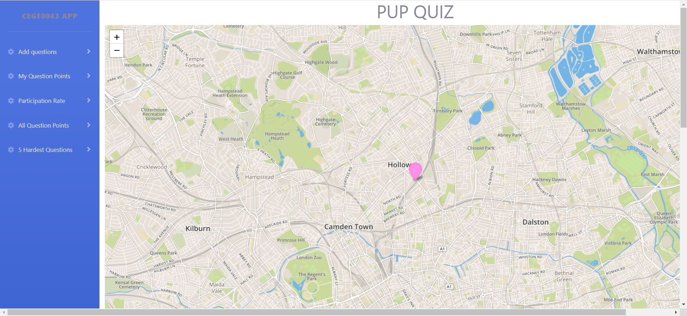
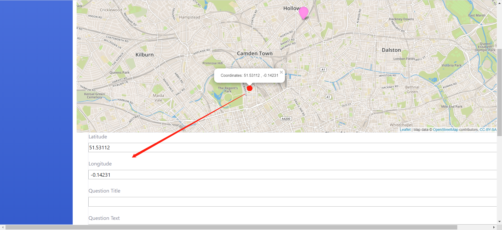
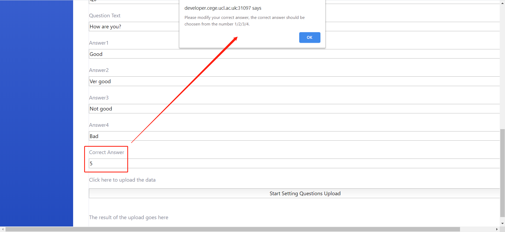
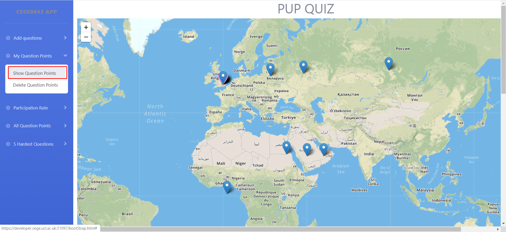

Firstly, confirm that you have connected to UCL Wi-Fi and then use your laptop to open the browser and enter the following link: https://developer.cege.ucl.ac.uk:31097/bootStrap.html. Then you will see the following interface on your screen (Figure 1).

Figure 1: All question setting functions are displayed on the left in the form of a menu, the pink point in the middle of the map is the user's current location
First, scroll the web page to the bottom of the map and you will see a form. Select the question point you want to set on the map and click the point. The web page will automatically help you enter the latitude and longitude coordinates of the point (Figure 2).
If the correct answer number you enter is not within the integer of 1 to 4, the system will remind you to enter 1, 2, 3 or 4.(Figure 3).

Figure 2: Fill in latitude and longitude automatically

Figure 3: Correct answer number check
After clicking the My question Points sub-menu 'Show Question Points', the question points set by user will be displayed on the map with default blue points. These points can be removed by clicking on the 'Remove Question Points'(Figure 4).

Figure 4: The Question Points that the user has set (Default blue points)